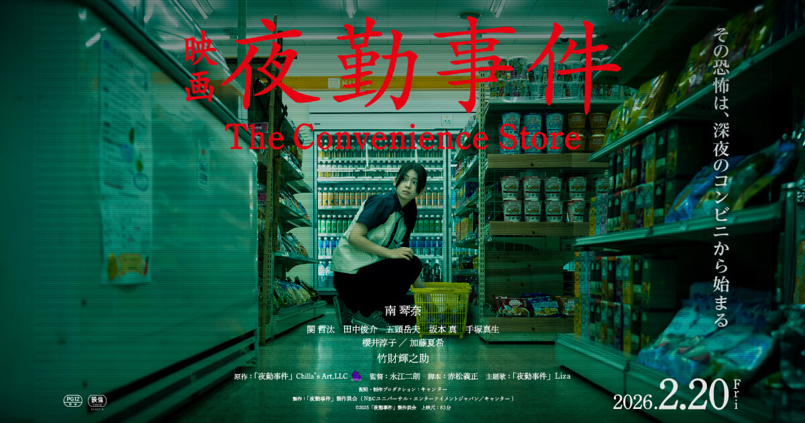

Yakin Jiken
The Convenience Store (2026)
夜勤事件

Menceritakan tentang Tazuru Yukino, seorang pekerja paruh waktu yang harus menjalani shift malam di sebuah minimarket. Suasananya yang sepi perlahan berubah menjadi mencekam ketika ia mulai mengalami berbagai kejadian ganjil dan supranatural. Situasi semakin menegangkan saat ia berhadapan dengan pelanggan misterius di tengah malam yang membawa teror mengerikan ke dalam toko.